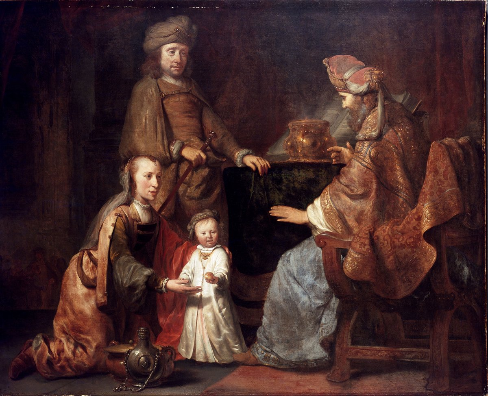

1 Samuel 2 — La Traducción Mister

Gerbrand van den Eeckhout, discípulo de Rembrandt, pinta al muchacho dejado con Elí en Silo, la escena con que abre este capítulo: «el muchacho servía a Jehová en presencia del sacerdote Elí» (v. 11). El niño ya lleva el manto largo y blanco que Ana le hará «año tras año» (v. 19).

Notas del traductor — versículo por versículo
«Mi cuerno». Ana, que en el capítulo anterior salió de Silo con los brazos vacíos, abre con una jactancia: «mi corazón se regocija en Jehová; mi cuerno se alza en Jehová». El cuerno, qéren, es la fuerza del animal y su cabeza erguida, y el cántico se cierra con la misma imagen, «alza el cuerno de su ungido» (v. 10), así que el poema empieza y termina con un cuerno levantado. «Mi cuerno se alza» está en un solo versículo de la Biblia hebrea. La RV 1909 dice «Mi cuerno es ensalzado en Jehová»; la TNM 1987 «mi cuerno realmente está ensalzado en Jehová»; la RV60 quita el cuerno, «Mi poder se exalta en Jehová». El «cuerno de salvación» del cántico de Zacarías en Lucas retoma la imagen (Lucas 1:69, ya en estas páginas).
«No hay roca como nuestro Dios». «No hay santo como Jehová … y no hay roca como nuestro Dios». Tsur, «roca», es el nombre que el cántico de Moisés da a Dios, «La Roca —perfecta es su obra» (Deuteronomio 32:4, ya en estas páginas), y los dos cánticos comparten más que esa palabra (v. 6, abajo). El griego no tiene roca aquí: dice «no hay justo como nuestro Dios». La RV60 dice «Y no hay refugio como el Dios nuestro»; la TNM 1987 «y no hay roca como nuestro Dios».
«Pesadas» o «no pesadas». «No sigan hablando con tanta altivez, tanta altivez»: el hebreo dobla guevohá, «alto», como imitando a los jactanciosos. Luego un par de escrito y leído: el texto escrito tiene lo, «no», y el margen lo, «por él», dos palabras que suenan igual. Leído como está escrito, «las acciones no son pesadas», que algunos toman como pregunta, «¿no son pesadas las acciones?»; leído con el margen, «por él son pesadas las acciones», como tiene esta traducción. La RV60 dice «Y a él toca el pesar las acciones»; la TNM 1987 «por él los hechos son correctamente avaluados».
Vuelco tras vuelco. Los arcos de los poderosos se quiebran y los que tropezaban «se ciñen de fuerza», jáyil, la palabra que hizo de Booz «un hombre valiente y poderoso» (jáyil); los saciados se alquilan por pan y los hambrientos «han cesado», un solo verbo sin complemento, que las versiones completan: la RV60 «los hambrientos dejaron de tener hambre», la TNM 1987 «los hambrientos realmente cesan [de tener hambre]». Luego el caso de la propia Ana: «aun la estéril ha dado a luz siete». Siete es el número pleno, el número que usaron las mujeres de Belén al llamar a Rut «mejor que siete hijos» (Rut 4:15, ya en estas páginas). Ana tendrá seis en total (v. 21).
«Jehová hace morir y hace vivir». «Hace descender al Seol y hace subir». La línea es otra vez el cántico de Moisés, «Yo hago morir, y yo hago vivir; yo he herido, y yo sano» (Deuteronomio 32:39, ya en estas páginas). En su lugar habla del poder de Dios sobre toda suerte, baja y alta, como explica el versículo siguiente: «abate, y también enaltece». La RV60 dice «Él hace descender al Seol, y hace subir»; la TNM 1987 «hace bajar al Seol».
«Del muladar». «Levanta del polvo al pobre; del muladar alza al necesitado, para sentarlos con los nobles». La ashpot es el basurero del pueblo, donde se sentaban los indigentes. La frase «del muladar» está en dos versículos de la Biblia hebrea, aquí y en Salmo 113:7, que repite esta línea casi palabra por palabra. El versículo mantiene aparte dal, «pobre», y evyón, «necesitado», como hace esta traducción en todas partes (evyón). Termina con «las columnas de la tierra»; la palabra para «columnas», escrita como aquí, está en un solo versículo de la Biblia hebrea. La RV60 dice «Y del muladar exalta al menesteroso»; la TNM 1987 «del pozo de cenizas alza a un pobre».
«No por la fuerza». «Los pies de sus fieles guarda … porque no por la fuerza prevalece el hombre». El griego tiene aquí otro versículo: «que concede el voto al que hace votos, y bendijo los años del justo», una línea que encaja con el voto de la propia Ana. En el versículo 10 añade una frase entera que está en Jeremías 9:23–24: «no se jacte el sabio en su sabiduría … sino que el que se jacta, jáctese en esto, en entender y conocer al Señor». Pablo cita el final, «El que se jacta, jáctese en Jehová» (1 Corintios 1:31, ya en estas páginas).
«Los que contienden con él». El hebreo escrito del versículo 10 tiene el singular, «el que contiende con él … contra él truena»; el margen lee plurales. La NVI dice «El Señor destrozará a sus enemigos»; la TNM 1987 «los que contiendan contra él serán aterrorizados», por un verbo que significa a la vez «ser quebrantado» y «ser consternado».
«Su rey … su ungido». El cántico termina: «da fuerza a su rey, y alza el cuerno de su ungido». Israel todavía no tiene rey; Jueces se cerró con «no había rey en Israel» (Jueces 21:25, ya en estas páginas). «Su ungido», meshijó, está en diez versículos de la Biblia hebrea, y este es el primero en el orden de la Biblia hebrea; los siguientes son las palabras de Samuel sobre Saúl en 1 Samuel 12, ya en estas páginas. El ungido aquí es el rey, pero el griego dice christou autou y la RV 1909 «el cuerno de su Mesías»; la RV60 «el poderío de su Ungido». El cántico de María en Lucas toma el de Ana como modelo: «Derribó a los poderosos de sus tronos y levantó a los humildes; a los hambrientos colmó de bienes» (Lucas 1:52–53, ya en estas páginas).
«Hijos de la nada». El muchacho se queda «sirviendo a Jehová en presencia del sacerdote Elí», y la línea siguiente se vuelve contra los propios hijos de Elí: «hijos de la nada; no conocían a Jehová». Es la etiqueta de los hombres de Guibeá (Jueces 19:22, ya en estas páginas), y Ana le había rogado a Elí que no la tuviera por «una mujer indigna» (1 Samuel 1:16, ya en estas páginas): la palabra es beliyaal las dos veces. «Hijos de la nada» está en ocho versículos de la Biblia hebrea. La RV60 dice «Los hijos de Elí eran hombres impíos»; la TNM 1987 «hombres que no servían para nada».
«El derecho de los sacerdotes». La palabra para la práctica de los sacerdotes es mishpat, la palabra con que la ley nombra lo que se les debía: «este será el derecho de los sacerdotes de parte del pueblo, de parte de los que degüellan un sacrificio» —la espaldilla, las quijadas y el cuajar (Deuteronomio 18:3, ya en estas páginas), y el pecho y el muslo de la ofrenda de paz (Levítico 7:34, ya en estas páginas). Aquí el derecho es lo que saque de la olla un tenedor de tres dientes. La TNM 1987 dice «debido derecho de los sacerdotes de parte del pueblo»; la RV60 «era costumbre de los sacerdotes».
«Antes de que hicieran arder la grasa». Peor que el tenedor: el criado exige carne cruda antes de que se queme la grasa. La ley dice «toda la grasa es de Jehová» (Levítico 3:16) y «el sacerdote hará arder la grasa en el altar» primero (Levítico 7:31, los dos ya en estas páginas). El que ofrece pide solo que la grasa vaya primero, y el criado dice: «No, me la darás ahora». Ese «No» es la lectura del margen; el texto escrito dice «a él». Así «los hombres trataban con desprecio la ofrenda de Jehová»: la RV60 dice «los hombres menospreciaban las ofrendas de Jehová»; la TNM 1987 «trataban la ofrenda de Jehová con falta de respeto».
Un efod de lino y un manto pequeño. Entre las escenas de los hijos, el muchacho: «Pero Samuel servía delante de Jehová, siendo muchacho, ceñido de un efod de lino». «Un efod de lino» está en cuatro versículos de la Biblia hebrea: Samuel aquí, los sacerdotes de Nob (1 Samuel 22:18) y David danzando delante del arca (2 Samuel 6:14, y su paralelo en 1 Crónicas 15:27), ninguno todavía en estas páginas. El efod y el meíl, el «manto», son prendas del sumo sacerdote (Éxodo 28:4, ya en estas páginas), y Ana le cose a su hijo uno pequeño cada año. «Un manto pequeño» está en un solo versículo de la Biblia hebrea. La RV60 dice «una túnica pequeña».
«El préstamo que fue prestado». Elí bendice a la pareja: «Jehová te dé descendencia de esta mujer en lugar del préstamo que fue prestado a Jehová». El sustantivo y el verbo son otra vez shaal, «pedir, prestar», que recorrió el capítulo anterior. El verbo hebreo es masculino, «que él prestó», leído como «que se prestó»; el griego dice «que tú prestaste». La TNM 1987 dice «en lugar de la cosa prestada, que fue prestada a Jehová»; la RV60 «en lugar del que pidió a Jehová»; la RV 1909 «en lugar de esta petición que hizo á Jehová».
«Jehová visitó a Ana». El verbo es paqad, el verbo de «Jehová visitó a Sara» (Génesis 21:1, ya en estas páginas): siguen tres hijos y dos hijas. Josefo dice «hijos y tres hijas» (Antigüedades 5.347, numerado 5.10.3 en Whiston). Luego «el muchacho Samuel creció junto a Jehová» —la línea a la que el capítulo vuelve una y otra vez entre los informes sobre la casa de Elí (vv. 11, 18, 21, 26).
Las mujeres que servían a la puerta. El verbo es tsavá, «servir, formarse en filas». Elí oye «cómo se acostaban con las mujeres que servían a la puerta de la tienda de reunión». La misma frase nombra a las mujeres cuyos espejos de bronce hicieron la fuente, «las mujeres que servían a la puerta de la tienda de reunión» (Éxodo 38:8, ya en estas páginas). El griego no tiene esta cláusula, y su edición (Discoveries in the Judaean Desert XVII, 2005) informa que el rollo de Samuel de Qumrán, 4QSama, tampoco la tenía. Josefo sí la tiene: los hijos abusaban de «las mujeres que venían a adorar», a unas por la fuerza y a otras con regalos (Antigüedades 5.339, numerado 5.10.1 en Whiston). La RV60 dice «las mujeres que velaban a la puerta del tabernáculo de reunión»; la TNM 1987 «las mujeres que servían a la entrada de la tienda de reunión».
«¿Quién intercederá por él?». La reprensión de Elí gira sobre un solo verbo: «Si un hombre peca contra otro hombre, Dios mediará por él; pero si un hombre peca contra Jehová, ¿quién intercederá por él?». Los dos son palal, el verbo de la oración de Ana («Y Ana oró», v. 1). «Mediará por él», u-filelo, está en un solo versículo de la Biblia hebrea. La palabra para el mediador es Elohim, que puede significar Dios o, como algunos entienden aquí, los jueces: la RV60 dice «los jueces le juzgarán», la TNM 1987 «Dios decidirá como árbitro por él».
«A Jehová le agradó hacerlos morir». «Pero ellos no escuchaban la voz de su padre» —las palabras de los benjamitas que «no quisieron escuchar la voz de sus hermanos» sobre Guibeá (Jueces 20:13, ya en estas páginas). La razón se da sin rodeos: «porque a Jehová le agradó hacerlos morir». El texto pone lado a lado la negativa de los hijos y la decisión de Dios, y no dice cuál va primero. La RV60 dice «porque Jehová había resuelto hacerlos morir»; la TNM 1987 «porque a Jehová ahora le agradaba darles muerte».
«Bien visto por Jehová y por los hombres». Frente a eso, «el muchacho Samuel iba creciendo, y era bien visto tanto por Jehová como por los hombres»; el hebreo dice «y bueno». Lucas dice lo mismo del niño Jesús, «en favor para con Dios y los hombres» (Lucas 2:52, ya en estas páginas). La RV60 dice «era acepto delante de Dios y delante de los hombres»; la TNM 1987 «haciéndose más agradable».
«¿Por qué dan coces?». Un «hombre de Dios» sin nombre trae la sentencia. Dios escogió al antepasado de Elí «para que subiera a mi altar, para que quemara incienso, para que llevara un efod», y dio a la casa «todas las ofrendas encendidas»; ahora: «¿Por qué dan coces contra mi sacrificio y contra mi ofrenda … engordándose con lo primero de toda ofrenda?». El verbo «dar coces», baat, está en dos versículos de la Biblia hebrea, aquí y en el cántico de Moisés, «Jesurún engordó, y dio patadas» (Deuteronomio 32:15, ya en estas páginas), donde también viene después de engordar. El griego dice «¿por qué has mirado mi incienso … con ojo desvergonzado?». La TNM 1987 dice «¿Por qué siguen ustedes pateando mi sacrificio»; la RV60 «¿Por qué habéis hollado mis sacrificios».
Pesado y ligero. «Yo dije que tu casa y la casa de tu padre andarían delante de mí para siempre»: el sacerdocio se dio a los hijos de Aarón «como estatuto perpetuo» (Éxodo 29:9, ya en estas páginas). «Pero ahora, dice Jehová, ¡lejos de mí! Porque a los que me honran honraré, y los que me desprecian serán tenidos en poco». «Honrar» es kabed, «ser pesado» (kavod), y «tenidos en poco» es qalal, «ser ligero»: Elí «honró» a sus hijos más que a Dios (v. 29), y su casa será hecha ligera. «A los que me honran honraré» está en un solo versículo de la Biblia hebrea. La RV60 dice «yo honraré a los que me honran, y los que me desprecian serán tenidos en poco».
La sentencia sobre la casa. «Cortaré tu brazo», la fuerza de la casa (el griego lee «tu simiente», las mismas letras hebreas con otras vocales); no habrá anciano en la casa; «verás angustia en la morada»; el que quede en el altar «consumirá tus ojos», y los demás «morirán en la edad adulta», donde el griego dice «por la espada de los hombres». La señal son Ofni y Finees: «en un mismo día morirán los dos» —Finees, el nombre del nieto de Aarón, a quien Dios dio «un pacto de sacerdocio perpetuo» (Números 25:13, ya en estas páginas). Para la «angustia», la RV 1909 dice «Y verás competidor en el tabernáculo», la TNM 1987 «mirarás a un adversario [en mi] morada» y la RV60 «Verás tu casa humillada»; para las muertes la TNM 1987 sigue al griego, «morirán por la espada de los hombres».
«Un sacerdote fiel … una casa fiel». «Y yo me levantaré un sacerdote fiel … y le edificaré una casa fiel, y andará delante de mi ungido todos los días». El adjetivo es neemán las dos veces, de aman. «Una casa fiel» está en tres versículos de la Biblia hebrea: aquí, en las palabras de Abigail a David (1 Samuel 25:28) y en la promesa del profeta a Jeroboam (1 Reyes 11:38), ninguno todavía en estas páginas. El narrador de Reyes marca el cumplimiento cuando Salomón quita a Abiatar del sacerdocio «para que se cumpliera la palabra de Jehová que había dicho sobre la casa de Elí en Silo» y pone a Sadoc en su lugar (1 Reyes 2:27, 35). La RV60 dice «yo le edificaré casa firme»; la TNM 1987 «una casa duradera». La última línea pinta a los sobrevivientes mendigando: «Te ruego que me agregues a alguno de los oficios del sacerdote, para que coma un bocado de pan»; la palabra para la «moneda» de plata, agorá, está en un solo versículo de la Biblia hebrea.
Patrones que vale la pena recordar
Dónde esta traducción mantiene las palabras exactas y distintas: «cuerno» para qéren, mantenido en los versículos 1 y 10 en vez de volverlo «poder»; «roca» para tsur, como en Deuteronomio 32; «Seol» sin traducir; «pobre» para dal y «necesitado» para evyón; «su ungido» para meshijó; «hijos de la nada» para bené beliyaal, como en Deuteronomio 13 y Jueces 19–20; «el derecho de los sacerdotes» para mishpat ha-kohanim, como en Deuteronomio 18:3; «hacer arder la grasa» para qatar, como en Levítico; «prestar» para shaal; «visitar» para paqad; «dar coces» para baat, como en Deuteronomio 32:15; «honrar» y «tener en poco» para kabed y qalal; y «fiel» dos veces para neemán.
Ecos pagados. Se canta el cántico que prometió el capítulo anterior; el «siete» de Ana responde al «mejor que siete hijos» de Rut; el cántico de Moisés presta la Roca, «yo hago morir, y yo hago vivir» y «engordó, y dio patadas»; «hijos de la nada» une a los hijos de Elí con Guibeá; y el juego de shaal del capítulo 1 vuelve en «el préstamo que fue prestado».
Ecos sembrados. La muerte de Ofni y Finees «en un mismo día» y la pérdida del arca en 1 Samuel 4; la casa de Elí en Nob y la destitución de Abiatar en 1 Reyes 2; «su ungido» en boca de Samuel en 1 Samuel 12; y «una casa fiel» otra vez para David en 1 Samuel 25. De ellos, 1 Samuel 4 y 12 están ya en estas páginas.
Próxima entrega de este libro: 1 Samuel 3 — «la palabra de Jehová escaseaba en aquellos días»: Jehová llama al muchacho Samuel por su nombre tres veces en la noche, y Elí le dice que responda: «Habla, que tu siervo escucha»; la palabra que llega es el fin de la casa de Elí.